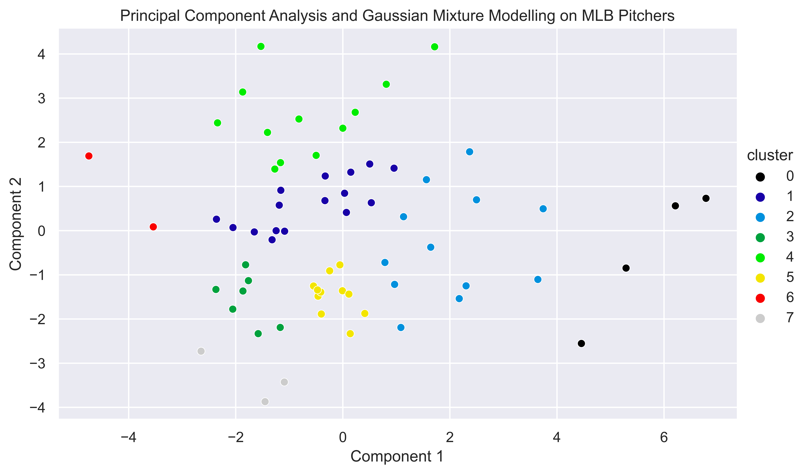
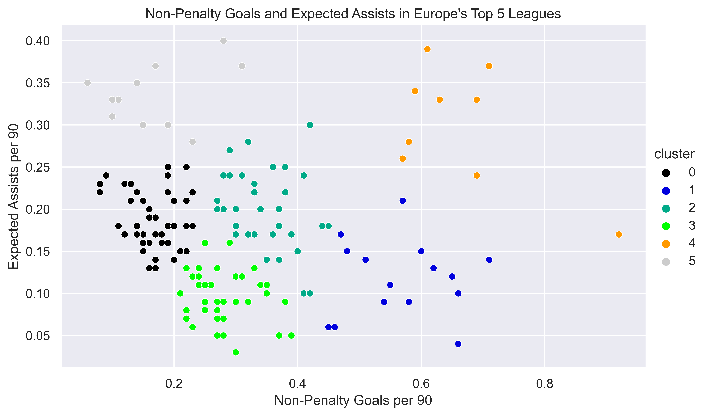
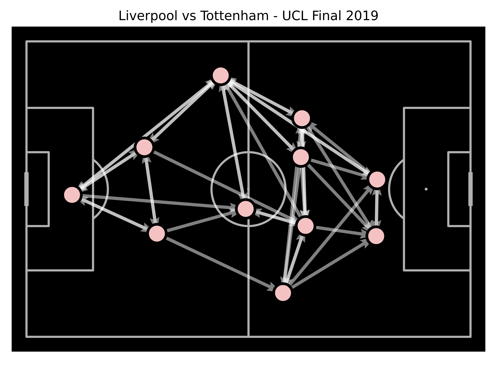

Personal Work.
Introduction
This website shows a selection of some of the data science work which I have undertaken in my free time.
MLB Pitcher Analysis
The first chart shows the results of employing Gaussian Mixture Modelling and Principal Component Analysis on Major League Baseball Starting Pitchers. Principal Componenet Analysis was applied on a dataset I compiled containing 17 different statistics reducing it to 2 dimensions, applying Gaussian Mixture Modelling to this data identified clusters in the data and allowed me to see similarities between groups of Pitchers which were not easily visible. I used the Akaike Information Criterion and Bayesian Information Criterion Methods built into Sci-kit Learn's Gaussian Mixture Model to choose the optimal number of clusters, a method I learned in Jake VanderPlas' Python Data Science Handbook.
Lionel Messi Pass Map
This visualisations shows Lionel Messi's progressive and non progressive passes in a match against Real Betis in 2019, calculated using numpy to determine if a pass moved the ball 25% closer to the goal.

European Top 5 League Creative and Goalscoring Output Analysis
This chart shows an earlier stage where I attempted analyse player roles by employing KMeans clustering on their goal creation and scoring data. Compared to my pitcher analysis the use of only two statistics limits its analytical value.
Thiago Pizza Chart
This chart is made using the mplsoccer package built on matplotlib and is called a 'Pizza Chart', it is similar to the Coxcomb charts pioneered by Florence Nightingale. The use of the scipy.stats module to create percentile based data is incredibly valuable in providing context enhancing the visualisation.

Liverpool Pass Network
This visualisation is called a pass network and is also made using the mplsoccer package, it utilises the groupby function in pandas to take raw event data from a football match and group passes by the player making and receiving the pass. This visualisation also uses the opacity of the arrows to denote the frequency of the passes between the two players with more frequent pass routes being less transparent enabling easy understanding.
